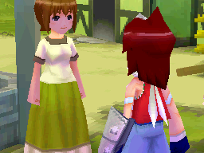
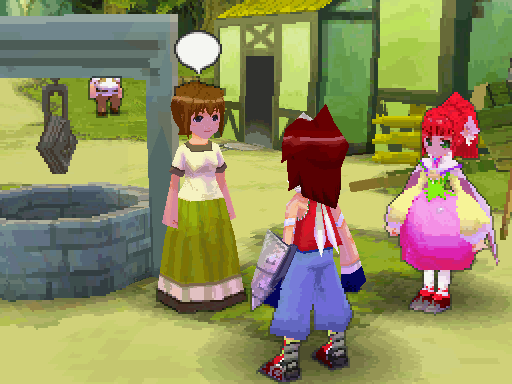

For quite a while now, we've had emulators capable of increasing the rendering resolution for 3D games. Most gamers in the emulation scene are probably familiar with this concept in emulators for 5th generation consoles such as the Sony's Playstation and the Nintendo 64. The 5th generation really saw the advent of what many consider "true" 3D gaming, or at least when consoles were sufficiently capable of handling all of those polygons. Emulators for those systems have long had the ability to increase the resolution at which they render those polygons, often beyond the native resolution of the console itself. As opposed to upscaling via interpolation such as bilinear or nearest neighbor, increasing the rendering resolution makes it possible to play these games in real HD. I prefer to call the rendering resolution the "internal resolution" as per the terminology from the Dolphin emulator. This makes sense to me as the internal resolution reflects the hardware's idea of what the resolution should be, an internalized view of the graphical output.
Increasing the internal resolution has obvious benefits over simply scaling the image or even applying a filter such as HQ2X, chiefly image quality. The difference between increasing the actual size of the rendered models and taking an image at native resolution and mathematically stretching it are quite vast actually. In the case of some N64 games, it's the equivalent of taking a picture at 320x240 and stretching it to 1080p instead of taking the picture at 1080p initially. Now, most emulators for consoles and handhelds in the 5th generation and above have the ability to increase their internal resolution, assuming of course the hardware was capable of manipulating 3D graphics. The only sticking point remains the Nintendo DS. There are a handful of emulator available, some even on the Android platform. However, none of them seem capable of raising the interal resolution of the DS' two 256 x 192 displays. Granted, Desmume and No$GBA both have methods to magnify the screen (Desmume uses scaling filters, No$GBA needs a secondary program called No$Zoomer) but all either do is scale pixels taken from the system's native resolution. Neither actually increases that native resolution.
Detractions, challenges
Before continuing, I will address a few points about increasing the DS' internal resolution. Some may question the need for higher image quality. One of the arguments I've heard is that doing this kind of enhancement isn't how the game is "supposed" to be played. Another view generally states that such low-poly models aren't worth rendering in higher resolutions. For the former then, taken to its fullest extent, justifying *any* sort of enhancement whatsoever - even something as innocent as 2x nearest neighbor scaling - becomes quite difficult. It's the ploy of "purists" who want an experience as close to the original hardware as possible. There's nothing wrong with that; it's mere personal preference and nothing more than that. I happen to prefer some enhancements over 1:1 graphical output.
The latter assertion is again opinion. Some can't stand looking at enlarged albeit low-poly models. I would much rather have crisp, clean models than the alternatives. On a high-resolution screen with good DPI, staring at a small, unscaled DS display is an altogether inadequate experience personally. Of course scaling filter alieviate the problem, but only so much. Just about everything bilinear interpolation works well for me in strictly 2D games. It's the 3D games where I'm not entirely satisfied. These scaling methods work best for 2D games, and some were even designed exclusively with them in mind. However, in comparison to increasing the internal resolution, they're simply not in the same league for me.
Now, a few technical issues do prevent most DS emulators from easily adjusting the internal resolution. I am not yet overly familiar with the DS' graphics system, but I am aware that it essentially treats polygons and sprites as two different entities. Accordingly, they're rendered differently. This situation seems quite unlike other hardware, such as the Playstation, wherein sprites are merely textures drawn on "flat" quadrangles. Most DS games aren't strictly 3D games; they have 2D elements within them for the UI, HUD, menus, etc. If you scale the internal resolution, you only affect the polygons, so sprites need to be scaled somehow as well. A DS emulator needs to take this into account, and the framework behind most DS emulators currently aren't setup to handle that. Zeromus from Desmume has said it would be possible to do something like that in the project, but it's some degrees more difficult than straight-up implementing a software renderer for the DS' native resolution, and it'd involve quite a bit of restructuring. That's also quite a bit of work to do for some folks who might not have all the time in the world to dabble such features. Nevertheless, increasing the internal resolution isn't entirely out of the question, and in fact it can be partially achieved right now.
Going big...
About a year or so ago, I experimented with Desmume's source to see if it were possible to increase the internal resolution. Going about it through software renderer didn't seem nearly as ideal as hacking around the OpenGL parts. Now I'm running Linux, Slackware 13.37 x64 to be exact. There are two ways to possibly utilize OpenGL as a rendering engine in Desmume when building it. The first is to use OSMesa for offscreen rendering. By default, Slackware doesn't provide a Mesa package that compiles with the library Desmume needs. In fact, building the library itself was a complete hassle, requiring me to builds OSMesa twice - once with a certain option enabled and once with that option disabled - and then merge the resulting Slackware packages. Absolute mess, and it doesn't even render some things correctly. The other easier method is build the gtk-glade version of Desmume and set the 3D engine to use gtkglext. This is much simpler for my situation, and remained free of graphical issues as of 0.9.8. So I used the gtk-glade as my test build and got to work on checking out the OpenGL parts of Desmume.
I am in no way a competent OpenGL programmer; I can make a few cubes spin around using outdated OpenGL 2.x code, load a .OBJ model, do minor lighting, and that's about it. Still, I managed to get somewhere relatively fast. The Desmume source has a file called OGLRender.cpp wherein I assumed most of the OpenGL rendering would take place. This is the case as far as I can tell today. There's nothing amazing or even remotely tricky about what I did, I just added a single line and line #856:
glScalef(2.0f, 2.0f, 1.0f);
Brilliant, no? We just tell every polygon to stretch 2x along the X and Y axes. That's it. Every model gets scaled 2x, hence the internal resolution is increased to 2x as well. In actuality, there are several drawbacks here. The first pertains to the issue of increasing the internal resolution as I earlier described. Desmume only scaled the polygons, so sprites went completely unaffected. The first game I tested was New Super Mario Bros. and I was a bit disappointed when I got to the title screen. I was later confused when I tried the first level and couldn't see Mario anywhere, at least not until he jumped, twice as large no less, but below the screen and sprites. New Super Mario Bros. uses both 2D sprites and 3D models almost equally, so this method utterly breaks games like it. The second problem became more apparent when I tried playing Tales of the Tempest. Scaling the internal resolution like so only allowed Desmume to display 1/4 of the enlarged scene. The OpenGL code in Desmume is hardcoded to look at 512 x 384 pixels for both DS screens, not the 1024 x 768 scene I was rendering. Even so, the result enthralled me:

Note, the top screen in the game is used for text and such as sprites while the bottom display all the 3D stuff. Although it's just 256 x 192 pixels of the data I was looking for, I could immediately see the difference in image quality. To illustrate this further, take a look at how the scene looks scaled 2x via nearest neighbor, then see the comparison by imposing the 2x internal resolution rendering:

...going home
Obviously there remains much more to pursue. From what I can tell, Desmume puts all of the 512 x 384 pixel data into an array called GPU_screen3D by reading pixels from glReadPixels(), then converting those pixels to a more convinient format. The key to half the battle, in addition to changing the GUI to handle 2x internal resolutions, would be to modify the GL_ReadFramebuffer() to accomodate the larger scene size. This is still fairly beyond me, and it doesn't even begin to address the issue of scaling the sprites as well. These steps would be useful for "proof-of-concept" purposes, however.
In the end though, I must say that I respect the views of people like Zeromus, who even talked about raising the internal resolution in Desmume before on the forums. It would entail a lot of underlying changes, and for those who don't see or care about the benefits or have other priorities, it's not time well spent developing it. I wouldn't expect the Desmume team to go about increasing the internal resolution if they felt strongly against it for any reason, and I can't fault them if they believed so. I have a pretty strong DIY attitude anyway, so whenever I get around to programming a DS emulator, I'll just have to take matters into my own hands. It looks hard, but it isn't any fun otherwise. ;)